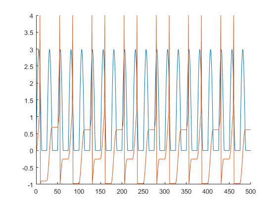
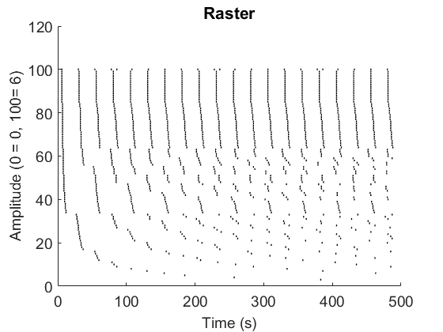
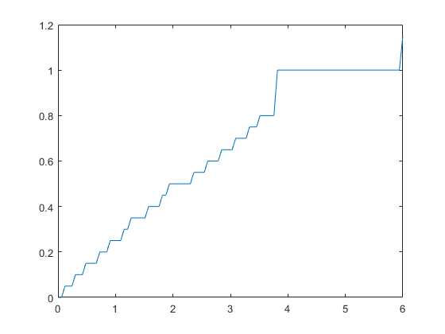
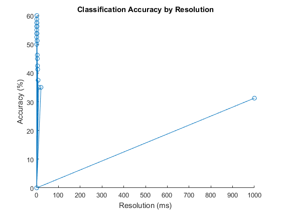

Contents
%%%%%%%%%%%%%%%%%%%%%%%%%%%%%%%%%%%%%%%%%%%%%%%%%%%%%%%%%%%%%%%%%%%%%%%%%%% % % Problem Set #6 % % Garrett Healy % %%%%%%%%%%%%%%%%%%%%%%%%%%%%%%%%%%%%%%%%%%%%%%%%%%%%%%%%%%%%%%%%%%%%%%%%%%%
1.1
Simulate the neural response for A=3. Create a figure that compares the time course of the input current and the output membrane voltage over the first 500 ms. What is the firing rate of the simulated neuron? How many spikes does it fire per stimulus cycle?
clear all; close all; vrest = 0; vthresh = 1; vspike = 4; vreset = -1; tau = 15; %ms freq = 0.04; %current in Hz A = 3; %amplitude of input t = 1:500; %in ms I = zeros(1,length(t)); for i = 1:length(t) I(i) = A*sin(2*pi*freq*t(i)); if I(i) < 0 I(i) = 0; %no negatives end end v = zeros(1,length(t)); v(1) = vrest; for i =2:length(t) if v(i) == -1 elseif v(i-1)>vthresh v(i) = 4; v(i+1)= -1; else dv = (-(vrest - I(i)))/tau ; v(i) = v(i-1) + dv; end end figure hold on plot(t,I); plot(t,v); hold off % It appears to only fire two spikes every 3 cycles. Given the frequency of % the input, thats about 27 spikes/second.
1.2
Simulate the neural response for 100 amplitude values between A=0 and A=6. Save the spike times that are evoked by the stimuli at each amplitude. Create a spike raster plot of the first 500 ms that illustrates the change in spiking patterns as a function of amplitude. Recreate the Johnson figure above, showing how impulses per cycle varies with increasing stimulus amplitude.
Avec = 0:0.0606:6; times = cell(100,1); vrest = 0; vthresh = 1; vspike = 4; vreset = -1; tau = 15; %ms freq = 0.04; %current in Hz t = 1:500; %in ms for j =1:100 A = Avec(j); %amplitude of input I = zeros(1,length(t)); for i = 1:length(t) I(i) = A*sin(2*pi*freq*t(i)); if I(i) < 0 I(i) = 0; %no negatives end end v = zeros(1,length(t)); v(1) = vrest; for i =2:length(t) if v(i) == -1 elseif v(i-1)>vthresh v(i) = 4; v(i+1)= -1; times{j} = [times{j} t(i)]; else dv = (-(vrest - I(i)))/tau ; v(i) = v(i-1) + dv; end end end figure RasterPlot(times','k',14,1,'Amplitude (0 = 0, 100= 6)') cycles = freq*500; ipc = zeros(100,1); for i = 1:100 trial = times{i}; spks = length(trial); ipc(i) = spks/cycles; end figure plot(Avec,ipc); % Just as the Johnson study concluded, there are definite steps in the rise % of impulses per cycle. We can see the plateau at 1 impulse per cycle that % is found in the Johnson figure. However, the rise from 0 to 1 appear % much more fluid in the Johnson figure than it is in my graph, possibly % indicating an issue with the model's tendency to exist in increments. % Neurons do not exist in a vacuum, they are affected by the neurons % surrounding them, and tend to depolarize when their neighbors depolarize. % This is hard to control in a model that looks at a single neuron. 
2: Classification
% Metric space analysis involves first characterizing the dissimilarity of % pairs of spike trains using spike distance, Dspike[q] (Victor and Purpura, % 1996). Then, for each spike train T, we determine which stimulus category % evoked spike trains whose average distance from T was smallest, where % stimulus categories are defined on the basis of frequency content. We % then measured the proportion of times the stimulus category into which a % given spike train was categorized corresponded to the stimulus category % that actually evoked it. close all; spikes = load('spikes.mat'); pvec = zeros(1,51); t = zeros(1,51); for q = 0:50:2500 pcorrect = 0; for i = 1:4 neur = spikes.spikes{i}; for j = 1:4 band = neur{j}; %bandwidths for k = 1:5 amp = band{k}; [bool,loc,diff]= isCor(i,j,k,q); pcorrect = pcorrect + bool; end end end pcorrect = (pcorrect/(i*j*k))*100; pvec((q/10)+1) = pcorrect; if q~=0 t((q/10)+1) = (1/q)*1000; % resolution in ms else t((q/10)+1) = 1000; end disp(string(q) + ' ' + string(pcorrect) + '%') end figure hold on semilogx(t,pvec,'-o') title('Classification Accuracy by Resolution'); xlabel('Resolution (ms)');ylabel('Accuracy (%)');
0 31.25% 50 35% 100 35% 150 37.5% 200 41.25% 250 42.5% 300 45% 350 46.25% 400 51.25% 450 51.25% 500 53.75% 550 56.25% 600 56.25% 650 56.25% 700 57.5% 750 57.5% 800 57.5% 850 60% 900 60% 950 60% 1000 60% 1050 60% 1100 58.75% 1150 58.75% 1200 58.75% 1250 58.75% 1300 58.75% 1350 58.75% 1400 57.5% 1450 56.25% 1500 56.25% 1550 56.25% 1600 55% 1650 55% 1700 55% 1750 55% 1800 55% 1850 55% 1900 53.75% 1950 53.75% 2000 53.75% 2050 53.75% 2100 53.75% 2150 53.75% 2200 53.75% 2250 53.75% 2300 52.5% 2350 52.5% 2400 52.5% 2450 50% 2500 50%